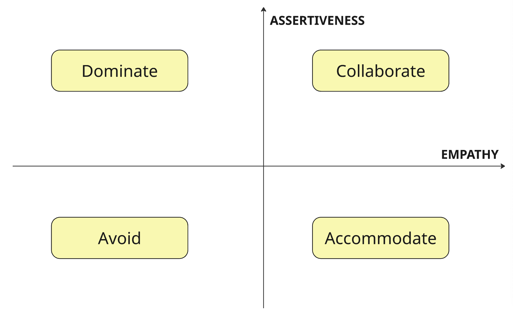
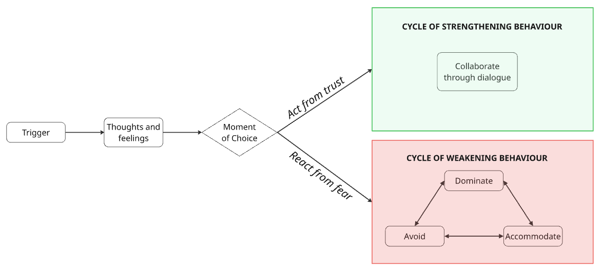
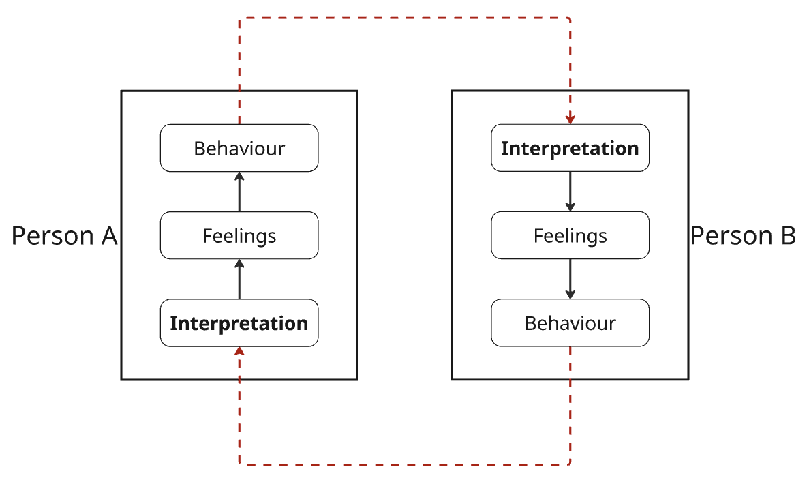

1. Understanding Conflict
There is a distinction between healthy confilct (e.g. a disagreement) and unhealthy conflict. Disagreement isn’t inherently a bad thing!
Relationships break down when people see conflicts as win/lose (“I’m so assertive and everyone needs to do what’s best for me”) or lose/win (“I’m so scared of conflict that I’ll people please to avoid it”). Eventually, both lead to lose/lose situations as parties retaliate in their own ways.
Conflicts should be seen as opportunities for win/win.
1.1. Phases of Escalation
- Harmony. Things are peaceful. Differences of opinion may happen, but they’re handled quickly and effectively.
- Discomfort. You’re becoming aware in differences of values, ideas, needs, roles, goals, personalities, etc.
- Disagreement. Disagreements begin to feel more emotional. You feel vulnerable and threatened when there are differences of opinion.
- Discord. You have tried unsuccessfully to work through disagreements, and now tensions are rising. You gather evidence to prove why you are right and they are wrong. Talking does not help as you are both trying to prove the other wrong.
- Polarisation. Emotions are high and objectivity is lost. This is unhealthy conflict. A change of tactics is required to resolve conflict, otherwise the party with more power/authority will impose their will on others.
- Disintegration. Point of no return. The relationship has broken down and is beyond repair.
1.2. Building Trust
Trust is like a barometer of the health of a relationship.
Trust is a necessary but not sufficient condition of a healthy relationship. Having trust doesn’t mean conflicts will never occur, but they are less likely to turn toxic and more likely to be handled in good faith.
- Act from personal values.
- Make and keep commitments.
- Seek to improve.
- Accept accountability. Apologise.
- Be curious and interested in others.
- Praise in public.
- Listen to others and seek their input. Ensure all people have airtime.
- Seek solutions that are important to others, not just yourself.
“We go fast when we walk alone. We go far when we walk together.”
2. Styles of Communication
“Communication is the largest single factor in determining the kinds of relationships an individual has with others and what happens to him in the world around him”
2.1. The Four Styles
We can categorise communication styles with respect to empathy (concern for others) vs assertiveness (concern for self).

This gives rise to four communication styles:
- Dominators. High assertiveness, low empathy. During conflict they handle their emotions by defending, arguing, lecturing, blaming, or attacking. Dominators don’t like to be wrong and they don’t like to lose. Their strategy is to convince, control or coerce other people.
- Accommodators. Low assertiveness, high empathy. Accommodators tend to put the opinions, needs and feelings of others ahead of their own; they are generally polite, easy to get along with, non-judgmental, and more self-aware than dominators or avoiders. During conflict, they defer to others and even give in. Over time, accommodators can grow resentful that their needs are unmet and act out in passive-aggressive ways.
- Avoiders. Low assertivenss, low empathy. They are usually easy going, independent, rational and emotionally detached. If things get tense, they try to pretend that everything is okay; their strategy is to leave issues alone and hope that they will go away. They suppress their feelings, use humor, rationalize and minimize. Because they have a hard time dealing with emotional issues, their relationships aren’t as deep; they don’t disclose their true selves to other people but seek to play it safe.
- Collaborators. High assertiveness, high empathy. They are able to share their own point of view, needs and so on but are also able to show empathy for the views and needs of others, responding in ways that allow all parties to “win.”
Collaboration is what we aim for. In a healthy relationship, people are able to assert their own needs and opinions. Yet they are also sensitive to the needs and feelings of others. Understanding this balance is the essence of good communication, a healthy relationship, and the ability to resolve conflict productively.
An additional thought on this: does the “self” in “concern for self” expand and contract depending on the situation? If somebody acts more or less assertively whne around others, is that because the sense of self expands to include others in the group? Like a mama bear being more assertive to protect her baby, because her sense of self now includes the baby; she will be more assertive for “mama + baby” than she would have been for “mama” alone. Similarly when people behave differently when their spouse is around.
2.2. Common Combinations of Commincation Styles and Handling Conflicts
- Dominate / Accommodate. Can work where one party is indifferent. The risk is the accommodator becomes resentful.
- Avoid / Avoid. Can be temporarily harmonious but by avoiding the lows they avoid the highs.
- Dominate / Dominate. Lots of arguments, neither person listening or responding.
- Dominate / Avoid. One person in control, the other indifferent.
- Accommodate / Accommodate. Both parties defer to each other, more concerned about the other’s needs, not concerned about or used to getting what they personally want.
2.3. When is Each Style Desirable?
Nobody is “always” one style. It depends on the situation at hand and the other party involved.
Generally collaboration is ideal, but in certain scenarios we may fall into other styles:
- Dominate: when there is an emergency requiring decisive action, when protecting ourselves from others taking advantage, when our values are being violated.
- Accommodate: when preserving the relationship is more important than the issue at hand, when you need to buy time to respond, when you may be wrong or others may have better ideas, you want to give the other person a “win”.
- Avoid: when an issue seems trivial or unimportant, when the timing isn’t right, when the issue is outside of your control, when relationship damage outweighs the benefits of action.
3. From Conflict to Collaboration
3.1. Dialogue
Collaboration becomes crucial as the topic of communication becomes sensitive or important, or as conflict is escalating.
Collaboration is the only style that can address high stakes issues effectively. We succeed together or we fail together.
Dialogue is crucial for collaboration. Dialogue is defined as:
“A participative process of communication in which people listen to understand each other’s point of view and then agree upon options to solve problems or resolve their disagreements”
There a key distinctions between arguments and dialogue.
| Argument | Dialogue |
|---|---|
| Concerned with self | Concerned with self and others |
| Adversarial | Unity |
| Intent to win | Intent to learn and explore |
| Listen to respond | Listen to understand |
| Polarised positions | Many sides |
| Oversimplify issues | View nuances and complexities |
| Right vs wrong | Discovery |
| Look for confirming data | Look for enlightenment |
3.2. Conflict Resolution Model
There is usually a trigger for a conflict.
The intensity of the trigger depends on:
- Relationship context and culture - is there trust and goodwill?
- The phases of escalation

4. Approaching Dialoague
4.1. Collusion: The Opposite of Conflict Management
Conflict can be thought of as “a circular and mutually reinforcing negative interaction”.
You are not responding to the behaviour of the other person, but your interpretation of their behaviour. We judge ourselves by our intentions and others by their actions.

You need to break out of the collusive cycle to resolve conflict. Be curious about the other person’s interpretation: “the third story” in between yours and theirs.
Dialogue is key to breaking collusion, but you first need to be willing to challenge your interpretation.
4.2. Adopting the Right Mindset
4.2.1. Responsibility
- Look at your contribution during collusion. It takes two to collude, and even if you’re not fully at fault, it’s rare that you’re 0% at fault. Can you take accountability for the negative parts you are responsible for?
- Take responsibility for yourself. See the collusion diagram - You can’t control the other person’s interpretations, feelings or behaviours. But you can control your own. The other person doesn’t cause you to behave a certain way; they may be a trigger, but they cannot cause it, that takes away your personal power.
- Think through three stories: yours, theirs, and the “third story” of a neutral observer.
4.2.2. Dealing with Feelings
“Avoiding feelings” doesn’t work because they will always leak in to discussions through tone of voice, facial expressions etc. It also makes it difficult to listen to others when focusing so hard on repressing emotions.
Feelings are a symptom of conflict. Unfulfilled needs are the cause. You wouldn’t ignore an obvious physical symptom like a tumour, so don’t ignore feelings.
Label your own feelings. All are valid, don’t judge them as good or bad. Then you can understand your needs and which of these are not being met.
There are four possible ways that one could respond to negative messages:
- Take the message personally and accept it
- Defend yourself and retaliate
- Become more aware of your own feelings and needs
- Understand the other person’s feelings and needs
Option 4 is the best approach. Option 3 can be useful too. Options 1 and 2 are harmful.
When sharing feelings, it is important to do so without judging or blaming. Start statements with “I” rather than “you”.
4.2.3. Committing to Outcomes
Examine your trust paradigm. Do you see people as adversaries or allies? The point isn’t to assume bad people don’t exist; some people are untrustworthy. But do you start from an assumption of mistrust or trust? Guilty until proven innocent or innocent until proven guilty?
The majority of disputes you have aren’t down to malice.
We have a tendency to assign negative emotions to others and positive to ourselves. Trust begets trust.
Commit to collaboration. Disagreements should focus on issues, not relationships.
Be clear about the outcomes you desire during negotiations. This doesn’t mean have a stubborn outcome in mind that you aren’t willing to budge from. Rather, the outcome is to collaborate on a win-win result.
4.3. Who Should Initiate Dialogue
A common misconception is that it should be the person with greater authority.
It can be anyone with a vested interest in the outcome and some ability to influence the outcome.
You may also want to weigh the risk vs reward. Some conversations might not be worth having.
Times when it may be best to not initiate:
- You’re upset and want to vent
- The true conflict is internal - you’re actually angry about something else
- The other person has no desire to resolve the conflict, and you don’t have the power to change their mind
- There is a power/authority imbalance
Four considerations when deciding whether to enter into dialogue:
- Impact. Short-term and long-term consequences
- Risk. Are you putting the relationship at risk by bringing up a topic? What could you potentially lose? What are the best, worst and most likely outcomes?
- Reward. What do you have to gain by resolving this conflict?
- Confidence. How confident are you in initiating and facilitating dialogue?
Not every conflict can be resolved:
- Some issues are protracted and the people involved may not see the value in dialogue.
- Some problems have no solutions.
5. Phases of Conflict Resolution
There are three objectives:
- Create an atmosphere of unity, mutual respect and goodwill
- Build a pool of shared understanding. Shared understanding is a precursor to problem solving; it means ensuring we all have the same background knowledge and shared perspective. We each come into a conversation with valid but limited perspective. Sharing our understanding gives us a better view of reality.
- Solve a problem.
In brief, the phases of dialogue (or conflict resolution) are:
- Preparation
- Understand the conflict resolution model and principles
- Work through your own thoughts and feelings
- Evaluate your commitment to collaboration
- Initiation
- Initiate dialogue with a “leveling statement”
- Clarify your intent and/or concerns
- State your commitment to collaboration
- Exploration
- Inquire about others’ points of view
- Advocate for your own point of view
- Repeat the cycle of inquiry and advocacy until you have built a shared pool of understanding
- Collaboration
- Identify what is important to each person
- Brainstorm options that will meet everyone’s needs
- Agree upon final solutions/actions
5.1. Preparation
Putting yourself in the right frame of mind and deciding how to initiate dialogue.
Step back from conflict, even if only briefly.
- Review these course materials rationally: nature of conflict, four communication styles, phases of escalation, collusion diagram and conflict resolution steps.
- Work through your thoughts and feelings.
- Evaluate your commitment to collaboration by answering the questions below.
Evaluating your commitment to collaboration:
- What is your intent going in to this conversation? Is it to solve a problem, or to win, or to punish someone, or to survive an encounter?
- Am I willing to show respect (in language, tone, demeanour)?
- Am I committed to collaboration and win-win outcomes?
- Am I willing to take responsibility rather than blame others?
- Am I seeking shared understanding rather than trying to build my own case?
- Am I willing to be curious about the other party and understand their point of view?
- Can I listen and draw the other out?
- Am I concerned for us rather than just me?
- Am I willing to take the time necessary to arrive at a good outcome?
5.2. Invitation
Inviting the other person to problem solve together.
Initiating the dialogue in a way that makes the other party feel safe sharing, thereby increasing the chances of a positive outcome. Safety, respect and openness. Allies not adversaries.
96% of the time, if a conversation starts poorly, it will end poorly.
- Use a soft start up. This doesn’t mean you should beat around the bush, but it means avoiding criticism, contempt and accusations.
- Show respect. You can disagree but still be respectful.
- Avoid blame. Start with “I” rather than “you”; you own your feelings but you’re not responsible for the actions of others.
- Use repair attempts. This is throughout the conversation, not just at the start. Try to de-escalate and defuse tension. Listen more if the other is getting defensive, acknowledge or apologise for mistakes, restate your intent to collaborate, recognise something good about the other or concede a point they’re making, light humour. Don’t get so caught up in this issue that your ignore HOW you’re communicating.
The following sub-sections discuss some important skills for invitation.
5.2.1. Soft Start Up
Some examples of a soft start up to invite dialogue:
“There’s something important that I’d like to get your thoughts on”
“I’d like to share something that I’ve been thinking about lately”
“I’d like to know your point of view about…”
5.2.2. Leveling
Creating a climate for dialogue in which everybody knows they will be treated in a fair way.
Leveling statements are usually short and should include:
- State a concern without blame or hostility
- Express a desire to understand the other person’s point of view
- Let them know you want to work things out together
5.2.3. Clarifying Your Intent
Point out what you do and do not intend. Start with the don’t.
“I don’t intend to place blame. I do intend to get back to a good working relationship.”
5.2.4. Clarifying Your Concerns
Highlight any concerns about entering into dialogue at the beginning.
“I don’t want you to think our relationship will be harmed by bringing this up.”
5.2.5. Stating Your Commitment to Collaboration
“My intent is to be helpful and not divisive”.
5.3. Exploration
Develop a shared understanding of everybody’s perspective before we try to solve the problem. Problem solving happens in the next step, this step is purely informational.
Exploration is a feedback loop of inquiry and advocacy.
Goals:
- Identify and understand the assumptions and perceptions of all parties
- To search for complete view of reality
Two heads are better than one. No single person is smarter than everybody. Research shows groups come to better decisions than individuals if they draw everybody’s opinions out and don’t fall victim to groupthink.
Potential mistakes in this phase:
- Trying to persuade or coerce others to your point of view
- Moving on to problem solving too quickly
5.3.1. Inquiry
Inquiry is “encouraging others to disclose their point of view then listening with empathy”.
Start with inquiry to demonstrate your intentions to listen and build trust.
Examples:
“What’s the situation as you see it?”
“How do you see things?”
“What are your thoughts?”
This is active not passive. Ask follow-on questions to draw them out. Acknowledge their point of view which is not the same as conceding or agreeing to it.
“Here’s how it looks from your point of view”
Keys to inquiry:
- Non-judgement
- Suspend your own point of view
- Be open and willing to learn
- Keep the responsibility on the speaker
Four skills of inquiry:
Inviting. A statement that shows your willingness to listen.
“What’s your POV?”
“Could you tell me more?”
“How do you see this differently?”
Clarifying. Asking questions that invite the speaker to expand. Don’t overdo it or it begins to feel like an interrogation.
“What was your interpretation of that comment?”
“Can you share more what you mean by that?”
“What did you feel when that occurred?”.
Empathy. Understand the deeper meaning, not just the words.
Priming. Making statements that represent your best guess when the other person shuts down or is struggling to articulate themselves.
“I would guess that you’re opposed to what we’ve been discussing”
5.3.2. Advocacy
Advocacy is “disclosing your own point of view”.
Do this clearly but not dogmatically; show a willingness to be influenced.
“This is the situation as I see it”
“These are my thoughts”
It can be help to do this in two parts:
“This is my point of view and this is how I arrived at it”
- Get right to the point. Don’t be vague or ramble.
- Be willing to share your feelings.
- Advocate non-dogmatically. Share your opinion and be aware that there may be other valid opinions.
- Encourage commentary.
Usually, inquiry is the more important skill over advocacy because people need to be drawn out and made to feel safe. The exception is when dealing with dominators. Here, it is important to acknowledge their point but focus on assertively advocating your own point. You may even need to say “Can you let me know you understand what I’m saying?” or “Can you repeat back to me what I’m saying?”
5.3.3. Immediacy
Immediacy is commenting on the process of communicating.
This is often necessary when you have done your best to understand the other’s point of view but they are unwilling to reciprocate.
“Can we get back to the issue? It feels like the conversation has become hostile”
5.3.4. Ground Rules
Particularly helpful with groups.
- Stay with the topic at hand and have one conversation at a time
- Seek what is right not who is right
- Seek involvement from all members
- Share opinions honestly with the intent to be constructive
- Share feedback with the intent of helpfulness, even when it is difficult to give
- Be open-minded to receive feedback, even when it is difficult to hear
- If you disagree with the majority of the group, you have a responsibility to:
- Make sure you understand others’ point of view
- Explain your own point of view
- Suggest alternative ideas that will work as well or better
- Keep disagreements in the group
- What happens in the room stays in the room, aside from follow up actions and decisions
- Be patient with the process
- Try to have fun, keep a sense of humour
5.4. Collaboration
Working together to find a win-win solution that solves everybody’s needs.
In some cases we don’t even need the collaboration step. The shared understanding built in the exploration phase is enough to “clear the air” and no more action is needed.
Three steps to achieve solutions during collaboration:
- Identify what is important to each party. Unmet needs are at the heart of conflict. People don’t fight over solutions, they fight over their needs. These needs may have been identified in the exploration phase, but it’s worth getting each party to explicitly state their needs in their own words so they can be confident that these will be considered in any proposed solution. “What is most important to you as we search for a solution?”, “What needs do you have that need to be met in order to know that we’ve solved the problem”
- Brainstorm alternatives. Just list the options, you’re not settling on any single option yet. See rules for brainstorming below.
- Come up with actions or solutions. Consensus is often helpful at this point. This is not the same as unanimity. Consensus means that everyone has contributed to the process of brainstorming solutions. Everyone can support the final solution even if it wasn’t their idea or their first choice. The decisions made by the group may well be different than those made if one person had been in complete control, and this is ok (and actively encouraged).
Rules for brainstorming:
- Make sure everyone understand the desired outcome.
- Each person shares ideas. Can be round robin or spontaneously.
- One thought expressed at a time.
- No criticism of any ideas.
- Outrageous ideas encouraged.
- No discussion of the relative merits of ideas, only to clarify its meaning.
- Build on each other’s ideas.
6. Conclusion
Some parting thoughts:
- The quality of our relationships is a function of the quality of our communication.
- Peace is not the absence of conflict. It’s the ability to handle conflict by peaceful means.
- Every conflict we face can have a positive or negative potential. The choice is not up to our opponents but to us, and our willingness to face conflicts and work through them.